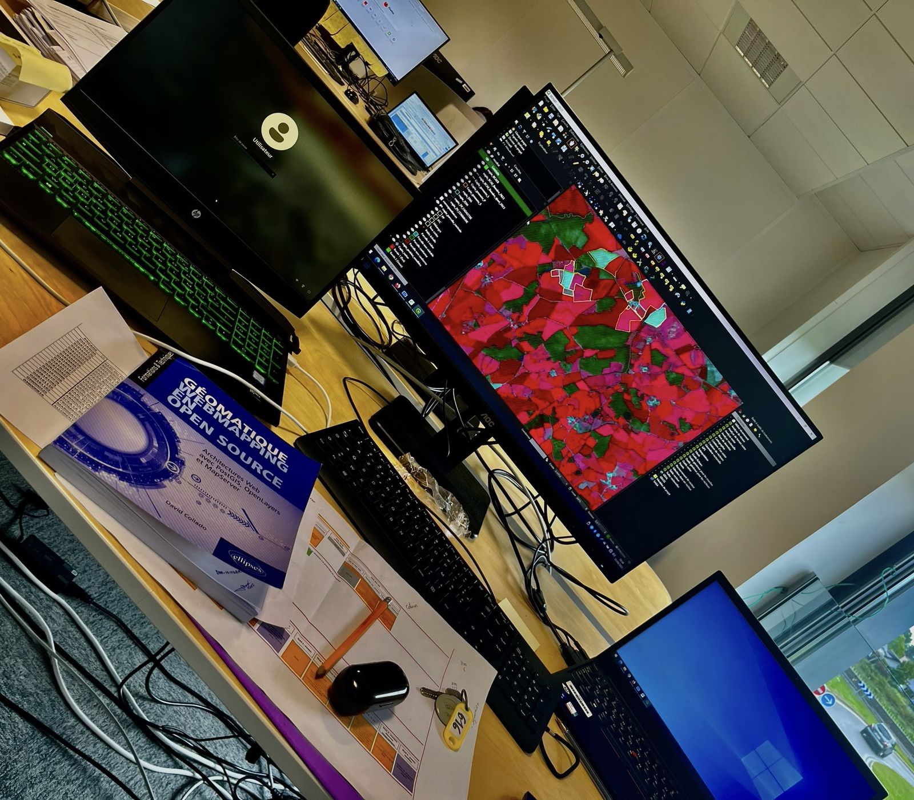

.png)


.png)


Université d'Orleans
2024-2025
Master 2 Geomatiqque Limnologie
Modules étudiés: Administration de base de donnée, Python, Webmapping, Géostatistiques, Webmapping, Gestion des ressources en eau, Etude limnique.

Géomaticien passionné par l'analyse spatiale et la cartographie des enjeux environnementaux. De l'automatisation de chaînes de traitement FME à la gestion de bases PostGIS en passant par le webmapping, je transforme la donnée géospatiale en outils d'aide à la décision. Une spécialisation particulière en hydrologie et zones humides, nourrie par mon parcours au Bénin et en France.
Contactez moiUne application réalisée avec arcgis online, qui met en lumière l'histoire de la ville de Ouidha à travers les joyaux touristiques.
Cliquez sur le titre pour en savoir plus
Dashboard interactif sous ArcGIS présentant la répartition de la population, des ménages et leur taille moyenne par département du Bénin (RGPH 2013).
Cliquez sur le titre pour en savoir plus
Dashboard réalisé pour accompagner une ONG de protection de la faune et de l'environnement, cartographiant les 54 aires protégées du Bénin (forêts classées, parcs nationaux, zones cynégétiques).
Cliquez sur le titre pour en savoir plus
Site web avec carte interactive (Leaflet) présentant les actions de sensibilisation et de protection des oiseaux migrateurs dans la vallée de l'Ouémé, au Bénin.
Cliquez sur le titre pour en savoir plus
Stage à l'ASP Centre-Val de Loire : utilisation des images Sentinel et contrôle de terrain pour la conformité des déclarations agricoles.
Cliquez sur le titre pour en savoir plus
Stage chez EGM : intégration d'outils SIG open source (QGIS, PostGIS, GeoServer) dans une architecture interopérable basée sur le standard NGSI-LD.
Cliquez sur le titre pour en savoir plus
Mise en ligne d'une carte interactive des îlots de chaleur d'Orléans Métropole avec GeoServer et Mapbender.
Cliquez sur le titre pour en savoir plus
Analyse comparative de deux bassins versants visants a l'allocation de budgets pour la restauration de la continuité ecologiques.
Cliquez sur le titre pour en savoir plus
Etudes géohistoriques de l'évolution des plans d'eau dans les départements français de 1750 à 2020.
Cliquez sur le titre pour en savoir plus
Analyse de la repartition spatiales des infrastructures hydauliques dans la commune de BONOU.
Synthèse bibliographique et cartographique du plus grand lac naturel de plaine de France, entre enjeux environnementaux et pressions agricoles.
Cliquez sur le titre pour en savoir plus
Analyse géomatique et limnologique de la stratification thermique d'un plan d'eau de Haute-Vienne durant l'été 1999.
Cliquez sur le titre pour en savoir plus
Création et structuration d'une base de données spatiale sécurisée pour les limites administratives de la région Centre-Val de Loire.
Cliquez sur le titre pour en savoir plus
Analyse physico-chimique et biologique de six points de prélèvement d'eau dans le quartier de La Source à Orléans.
Cliquez sur le titre pour en savoir plus
Classification supervisée d'images Landsat pour suivre l'évolution de l'occupation du sol entre 2000 et 2020.
Cliquez sur le titre pour en savoir plus
Cartographie d'indicateurs d'empreinte des plans d'eau à l'échelle européenne pour délimiter des limnorégions.
Cliquez sur le titre pour en savoir plus
Constitution d'un dossier de candidature Ramsar pour un site de zones humides du Cher et de l'Indre.
Cliquez sur le titre pour en savoir plus
Land Surface Temperature

NDVI

Extraction des bassins

Comportement du lac entre deux périodes Cliquez sur le titre pour visualiser la carte

Trajectoire de la stagnucité des étangs (1793-2020) Cliquez sur le titre pour visualiser la carte

Carte de situation géographique de Bonou

Opération Barkhane en Afrique

CEDEAO en 2022

Cartes du parcours commentés du jardin des plantes

Cartographie des limnorégions en Europe Cliquez sur le titre pour visualiser la carte

Zones humides et biodiversité dans le Cher Cliquez sur le titre pour visualiser la carte

Habitats et gîtes à chiroptères dans le Cher Cliquez sur le titre pour visualiser la carte

Occupation du sol de l'agglomération orléanaises

Habitats des chauves-souris dans le Cher Cliquez sur le titre pour visualiser la carte

Types d'occupation du sol en 2020 Cliquez sur le titre pour visualiser la carte

FME (Feature Manipulation Engine) Essentials

FME - API ArcGIS Online

Programmation géospatiale avec Arcpy

Cartographie web avec Qgis , PostgreSQL/ PostGIS , GeoServer, OpenLayers et Leaflet

Cartographie ESRI

Complete Enterprise GIS (Build Web Mapping App from Scratch)

Automatisation des tâches géomatiques avec Python

Claude 101

Claude Code 101

Modules étudiés: Administration de base de donnée, Python, Webmapping, Géostatistiques, Webmapping, Gestion des ressources en eau, Etude limnique.
Modules étudiés : SIG Concepts fondamentaux Traitement, analyse et cartographie des données spatiales Conception de Bases De Données spatiales Acquisition et traitements des données spatiales : GPS, Lidar, Sonar et SIG Mobiles
Réactualisé des connaissance dans le domaine la géographie physique, humaine, l’aménagement du territoire, et l'urbanisme ainsi que en analyse spatiale, en cartographie, en gestion de projets d'aménagement.
Cette licence m'a permis de maîtriser les outils et méthodes pour analyser, représenter, gérer les données géospatiales, ouvrant ainsi la porte à un monde où la cartographie, l'analyse spatiale et la visualisation dynamique deviennent essentielles.
© Jaurès DAA-HINGBANON | All Right Reserved